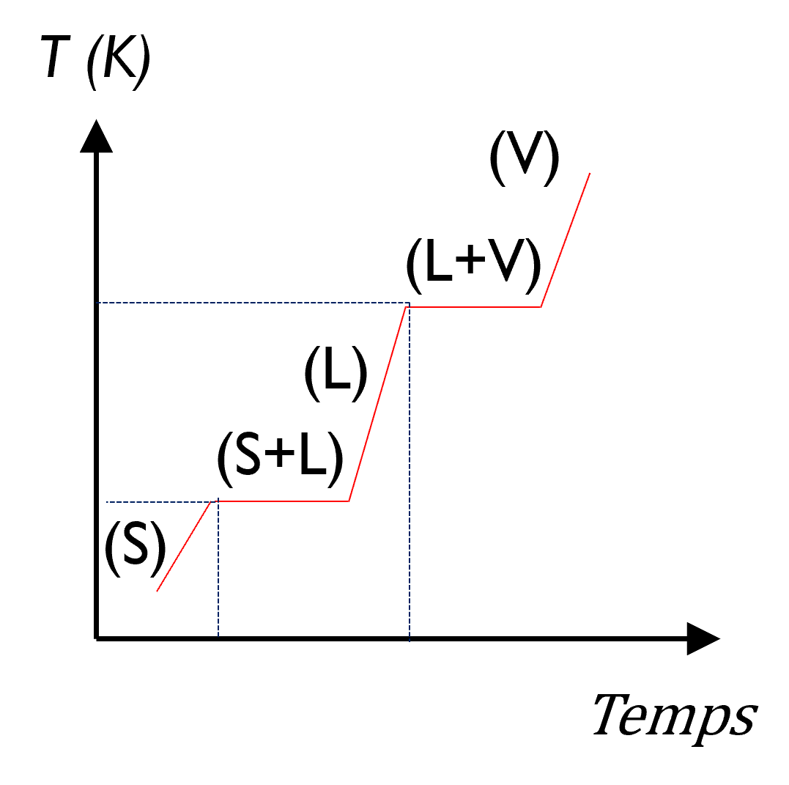

PARTIE 3 / 6
Enthalpie
Comprendre la fonction enthalpie et les variations associées au chauffage et aux changements d’état.
Fonction enthalpie
Enthalpie H
On définit l’enthalpie par H = U + pV. L’enthalpie est une fonction d’état.
ΔH = ΔU + Δ(pV)
Pour une transformation monobare dans les conditions du cours, la variation d’enthalpie est la chaleur transférée :
On utilise ici le travail de pression seul, une pression extérieure constante et des états initial et final en équilibre mécanique avec l’extérieur : pᵢ = pf = pext. Le bilan s’écrit :
ΔH = ΔU + pext(Vf − Vi) = Qp
Que signifie ΔH ?
H est l’enthalpie, fonction d’état définie par H = U + pV. Δ indique sa variation entre deux états : ΔH = Hf − Hᵢ. Dans les conditions monobares du cours, cette variation est la chaleur transférée.
Les notations ΔrH°T, ΔfH°T ou ΔvapH°T précisent ensuite le type de transformation, les états standard et la température. Chaque symbole est détaillé dans la partie « Enthalpie de réaction ».
Capacité calorifique
Capacité calorifique C
Quantité de chaleur à fournir à un constituant pour élever sa température de 1 °C (ou 1 K). Elle s’exprime en J·K⁻¹.
Ces relations décrivent un chauffage sans réaction ni changement d’état, dans des conditions fixées. L’écriture Q = C ΔT suppose C constante sur l’intervalle. À pression constante, on utilise Cp.
| Capacité | Unité | Calcul |
|---|---|---|
| Totale C | J·K⁻¹ | Q = C ΔT |
| Molaire Cp,m | J·mol⁻¹·K⁻¹ | Q = n Cp,m ΔT |
| Massique cp | J·kg⁻¹·K⁻¹ ou J·g⁻¹·K⁻¹ | Q = m cp ΔT |
Pour plusieurs constituants, on additionne leurs contributions. La masse ou la quantité de matière doit correspondre à l’unité de la capacité donnée.
Variation d’enthalpie avec la température
À pression constante, pour un constituant qui ne change pas d’état :
Le cours donne Cp(T) = a + bT + cT². On considère souvent la capacité constante sur l’intervalle étudié :
Si sa dépendance en température est utilisée, on calcule l’intégrale de Cp(T). Les primitives utiles figurent dans la fiche pratique.
Chauffage et changement d’état
La fusion et la vaporisation nécessitent un apport d’énergie pour vaincre les forces de cohésion des phases condensées. La température reste constante pendant le changement d’état du corps pur à pression constante.
Qvaporisation = n ΔvapH°
Comprendre la chaleur latente
Pendant la fusion ou la vaporisation d’un corps pur à pression constante, le système reçoit de l’énergie alors que sa température reste constante : cette énergie permet le changement d’état. Le palier du graphique ci-dessous représente cette situation. Le terme chaleur latente désigne cette chaleur de changement d’état ; « latente » rappelle que l’apport de chaleur ne se traduit pas ici par une hausse de température.
Il faut distinguer la quantité totale de chaleur échangée et la grandeur donnée par unité de matière :
| Grandeur | Unité | Signification |
|---|---|---|
| Qp | J ou kJ | Chaleur échangée par toute la quantité qui change d’état. |
| ΔfusH ou ΔvapH | J·mol⁻¹ ou kJ·mol⁻¹ | Enthalpie de changement d’état pour une mole. |
| Lfus ou Lvap | J·kg⁻¹ ou J·g⁻¹ | Chaleur latente massique, pour un kilogramme ou un gramme. |
L = Δchangement d’étatH / M
M est la masse molaire : avec ΔH molaire en J·mol⁻¹ et M en kg·mol⁻¹, L est en J·kg⁻¹. Dans ces expressions, n ou m est la quantité effectivement transformée, à la température du changement d’état.
Pour la fusion et la vaporisation, L est positif et le système reçoit de la chaleur. À la même température, les transformations inverses cèdent cette chaleur : Qsolidification = −m Lfus et Qcondensation = −m Lvap.
Exemple du cours : vaporiser les 3 mol d’eau déjà portées à 100 °C demande 3 × 40,7 = 122,1 kJ. Le chauffage préalable de 20 à 100 °C se calcule séparément. On utilise m c ΔT pour le chauffage dans une même phase et m L pour le changement d’état : ΔT = 0 pendant le palier ne signifie donc pas Q = 0.

Décomposer un chauffage en plusieurs étapes
Quand l’état initial et l’état final traversent plusieurs phases, découpez le chemin à chaque changement d’état. À la pression du TD, avec fusion à 0 °C et ébullition à 100 °C, passer de glace à Tᵢ < 0 °C à de la vapeur à Tf > 100 °C demande cinq contributions :
- Chauffer la glace : Q₁ = m cglace(0 − Tᵢ).
- Fondre la glace : Q₂ = n ΔfusH.
- Chauffer l’eau liquide : Q₃ = m ceau(100 − 0).
- Vaporiser l’eau : Q₄ = n ΔvapH.
- Chauffer la vapeur : Q₅ = m cvapeur(Tf − 100).
Utilisez la capacité de la phase présente et l’enthalpie de changement d’état à la température de l’étape. Lors d’un changement d’état inverse, le signe de l’enthalpie change : la condensation de la vapeur en liquide libère la chaleur que la vaporisation absorbe, à la même température.
Relier chaleur, travail et énergie interne lors d’une vaporisation
Pour vaporiser n moles de liquide déjà à sa température d’ébullition, sous pression extérieure constante :
W = −pext(Vgaz − Vliquide)
ΔU = Qp + W
Si la vapeur est assimilée à un gaz parfait et si le volume liquide est négligé devant celui de la vapeur, pVgaz = nRT donne W ≈ −nRT, puis ΔU ≈ nΔvapH − nRT. Cette approximation doit être annoncée. Une partie de la chaleur reçue sert à fournir du travail au milieu extérieur ; toute la chaleur reçue ne devient donc pas une augmentation de U.
Thermochimie · Lénaïc Lartigue · Enthalpie · CC BY-NC-ND 4.0
6 questions de compréhension
Ces questions reprennent les définitions et les relations du cours. Vous pouvez recommencer.
Exercices
Après le QCM, cherchez sur votre brouillon puis saisissez vos réponses. Vous pouvez vérifier une étape à la fois. Les indices et la correction s’ouvrent à votre demande.
Vos réponses sont conservées dans ce navigateur. Ce suivi est un repère de travail, pas une note.
EXERCICE 1
Vaporiser trois moles d’eau
Exercice du diaporama · diapositives 21–22
Calculer la quantité de chaleur nécessaire à la vaporisation de 3 moles d’eau initialement à 20 °C.
Données : Cp,m(H₂O,l) = 75,3 J·mol⁻¹·K⁻¹ ; ΔvapH° = 40,7 kJ·mol⁻¹.
Indice 1
Il y a deux étapes : chauffer le liquide, puis changer de phase à température constante.
Indice 2
Le terme Cp,m ΔT est en J·mol⁻¹ ici ; l’enthalpie de vaporisation est en kJ·mol⁻¹.
Correction
Chauffage de 20 à 100 °C : Q₁ = 3 × 75,3 × (100−20) = 18 072 J ≈ 18,1 kJ.
Vaporisation : Q₂ = 3 × 40,7 = 122,1 kJ.
Q = Q₁ + Q₂ ≈ 140,2 kJ.
EXERCICE 2
Isoler l’étape de chauffage
Entraînement avec les données de l’exercice du cours
On chauffe 3 mol d’eau liquide de 20 à 100 °C, à pression constante, sans vaporisation. Cp,m = 75,3 J·mol⁻¹·K⁻¹ est constante.
Indice 1
Distinguez la capacité molaire et celle de toute la quantité d’eau.
Correction
C = 3 × 75,3 = 225,9 J·K⁻¹ ; ΔT = 80 K ; Q = 225,9 × 80 = 18 072 J = 18,072 kJ.
EXERCICE 3
Inverser un changement d’état
Entraînement sur le signe des changements d’état
À la même température de 100 °C, on condense 3 mol de vapeur d’eau en liquide. On utilise ΔvapH = +40,7 kJ·mol⁻¹, comme dans l’exercice du cours.
Indice 1
Inverser le changement d’état inverse le signe.
Correction
ΔcondH = −40,7 kJ·mol⁻¹ ; Q = 3 × (−40,7) = −122,1 kJ. L’eau cède de la chaleur.
Discussion · Enthalpie
Posez votre question et décrivez le raisonnement qui vous pose problème. Les échanges sont publics.
Vous pouvez aussi poser vos questions par mail ou pendant une séance à distance.